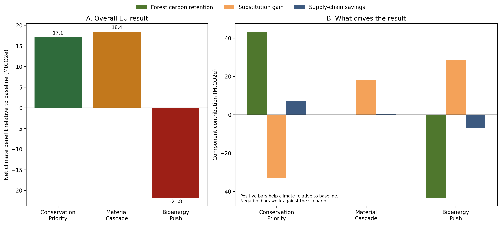
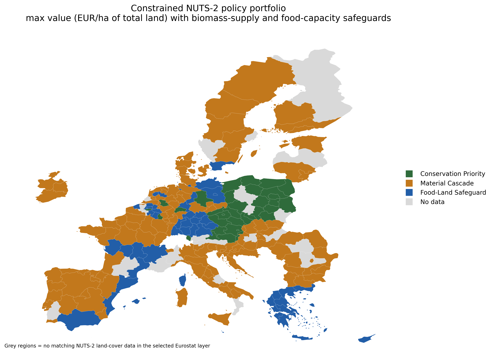
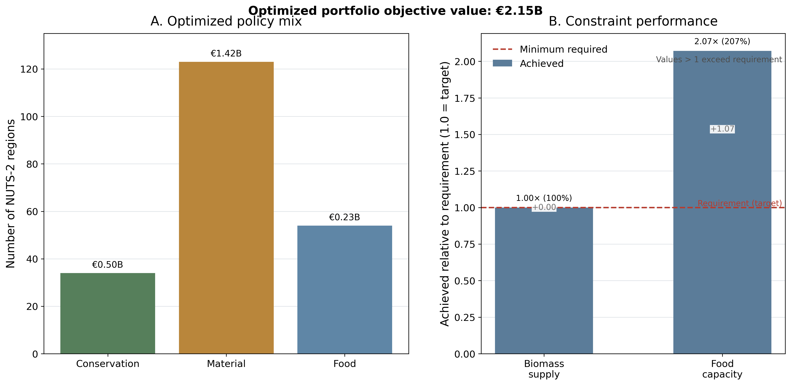

This project was built as a transparent, portfolio-scale research exercise directly aligned with the Chalmers position. It combines official European data, carbon-accounting logic, subnational spatial analysis, and a small constrained allocation model to study trade-offs between forest carbon, wood use, food-related land capacity, and policy design.
How do alternative forest-biomass strategies across Europe compare when climate performance is evaluated through forest carbon retention, substitution effects, and biomass use, and how do those forestry choices interact with agricultural land that may be important for food-related production capacity?
The workflow combines FAOSTAT land-use and forestry statistics with Eurostat GISCO country and NUTS-2 geometry, Eurostat regional land-cover statistics, and Eurostat crop-production data. The country-level analysis uses the 2024 FAOSTAT inputs, while the NUTS-2 land-cover layer uses the latest available selected Eurostat regional year, 2022.
EUR 100/tCO2.The country-level model estimates scenario performance through three transparent components: forest carbon retention, substitution gain, and supply-chain savings. The forest carbon opportunity-cost term is country-specific and rises where observed harvest intensity and carbon density are relatively high.
The model then runs 400 fixed-seed sensitivity draws to distinguish robust from assumption-sensitive conclusions. At NUTS-2 level, country scenario values are downscaled by regional woodland share, and the agricultural side is strengthened with an official crop-production-intensity index derived from Eurostat data on cereals, pulses, potatoes, and vegetables.
The metric basis now needs to be read carefully. The Sweden empirical rerun is a forest-only comparison
and reports value in EUR/forest ha. The integrated and optimized NUTS-2 layers compare forest and
food-land policies together and therefore rank options in EUR/ha of total land. This is why
SE22 can keep Material Cascade as its best forest policy while still selecting
Food-Land Safeguard in the integrated map.

Material Cascade yields about 18.4 MtCO2e net climate benefit relative to baseline.Conservation Priority yields about 17.1 MtCO2e.Bioenergy Push is strongly negative at about -21.8 MtCO2e.The project extends the country-level analysis to NUTS-2 regions to examine where forestry strategy and agricultural land competition begin to collide. The unconstrained integrated screen selects the locally highest-value option in each region:
Material Cascade in 92 regions,Conservation Priority in 79,Food-Land Safeguard in 40,Bioenergy Push in 0.This is where the project stops looking like a generic climate dashboard and starts looking more like doctoral systems analysis: the main question is no longer only “which climate strategy is best?” but also “where should forestry priorities yield to food-related land protection?”
The final extension adds a small mixed-integer allocation model. Instead of choosing the best option in each region independently, the workflow selects exactly one option per NUTS-2 region while enforcing two EU-wide safeguards:
97% of baseline regionalized biomass supply,22% of the available crop-capacity proxy.

Material Cascade rises to 123 selected regions,Conservation Priority falls to 34,Food-Land Safeguard rises to 54,Bioenergy Push remains at 0.
In total, 45 NUTS-2 regions switch away from their unconstrained best option once the EU-wide
safeguards are enforced. The optimized portfolio retains about 97.0% of baseline regionalized biomass
supply and safeguards about 45.6% of the available crop-capacity proxy, well above the minimum
required 22%. At EUR 100/tCO2, total portfolio value is about EUR 2.15 billion.
The main value of this project for the application is not that it is already a full land-use model. It is that it demonstrates the right kind of early doctoral behavior:
The project remains intentionally smaller than a doctoral research model. It does not include dynamic forest age classes, direct regional forestry production data, direct agricultural greenhouse gas inventories, market equilibrium effects, trade leakage, or richer biodiversity constraints. The NUTS-2 forestry results are still a screening extension derived from country-level results, and the agricultural side remains simplified even after the addition of official crop-production context.
As an application artifact, this project creates direct evidence that the applicant can work in the style the Chalmers position calls for: integrating forestry and food-land trade-offs, handling European spatial data, building transparent climate-accounting logic, and translating those elements into policy-relevant regional allocation analysis without overstating what the model can do.
Repository: eu-forest-biomass-tradeoff-explorer
Recommended supporting files: docs/chalmers_research_note.md,
docs/chalmers_personal_letter_draft.md,
docs/chalmers_figure_selection.md,
docs/chalmers_cv_version.md